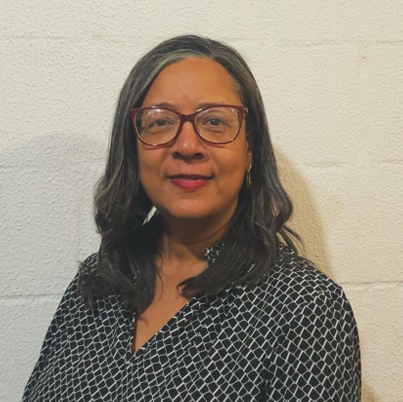
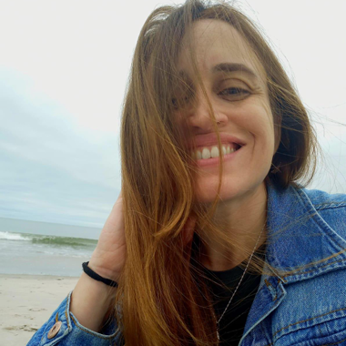
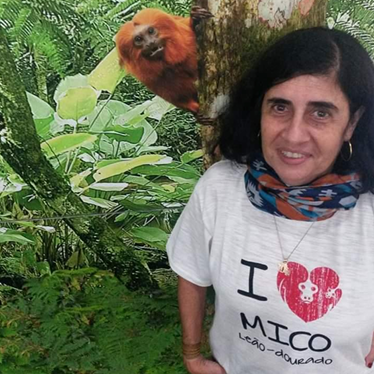
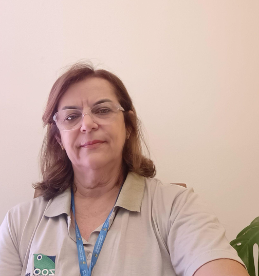
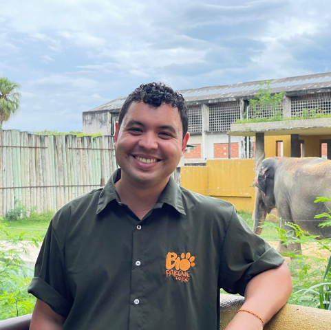
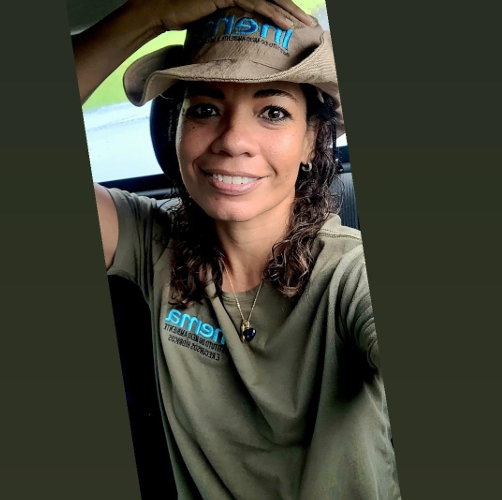
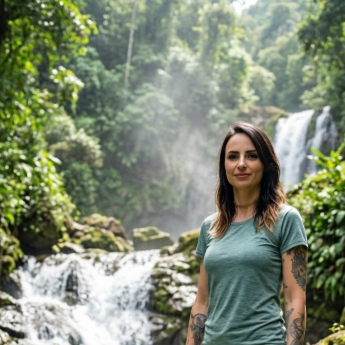

Comitê de Educação Ambiental
Planejar e promover a educação para conservação em âmbito nacional
O Comitê de Educação para Conservação da Associação de Zoológicos e Aquários do Brasil (AZAB) tem como objetivo planejar e promover atividades de educação para conservação em âmbito nacional, envolvendo os zoológicos e aquários associados à AZAB e incentivando a realização de campanhas e projetos colaborativos. Nesse contexto, o Comitê busca fortalecer a compreensão de que os impactos ambientais podem ser reduzidos por meio de ações cotidianas de conservação, reconhecendo o ser humano como agente fundamental na construção de resultados positivos, especialmente quando apoiados por iniciativas, projetos e programas educativos voltados à sensibilização e ao engajamento socioambiental.
Coordenação do Comitê







Conheça nossas campanhas
O Comitê de Educação Ambiental articula campanhas nacionais de conservação.